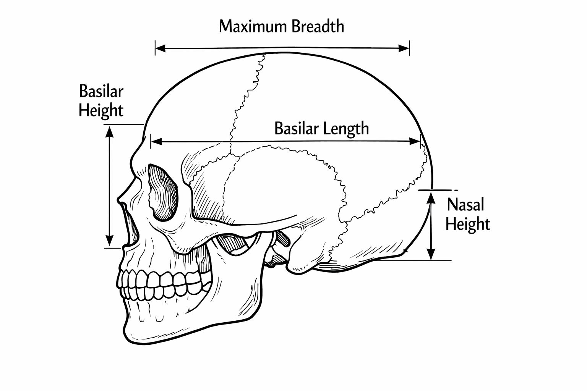
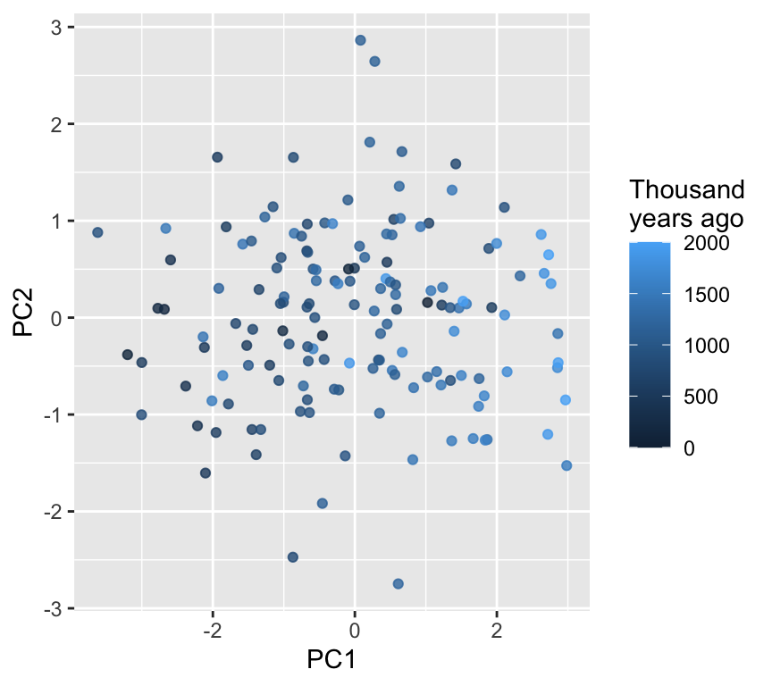
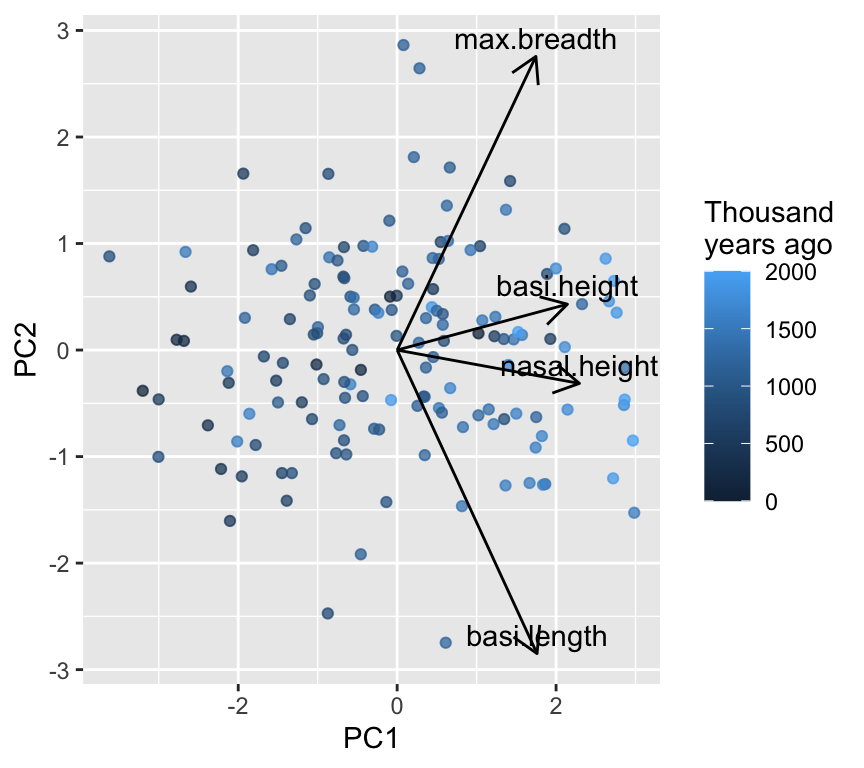
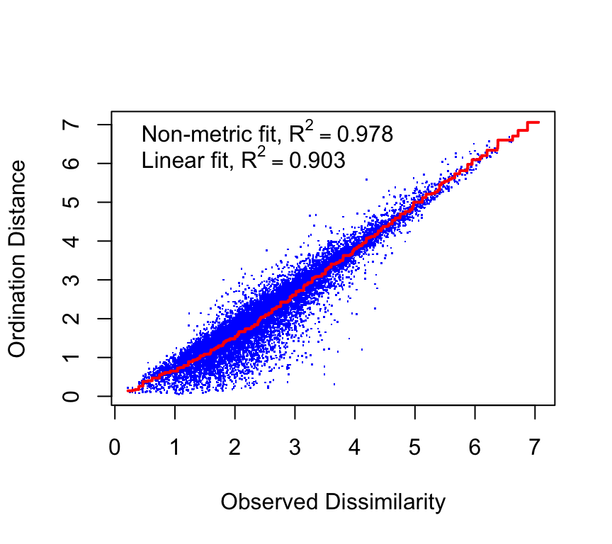

In earlier chapters, we mostly worked with one response variable at a time. But many biological questions are intrinsically multivariate:
morphology: multiple measurements describe shape (not just size)
communities: abundance of many species describes composition
physiology / omics: many traits or genes change together
When we have many response variables, two practical problems appear:
How do we visualize patterns across many variables?
How do we summarize the dominant patterns without losing the biology?
Ordination is a family of methods that helps with both.
It can also help in cases where we have many predictor variables (e.g. environmental gradients). This can be especially useful when predictors are collinear.
Important
Core idea
Ordination finds a low-dimensional representation (often 2D) of multivariate data, so that points that are “similar” in the original multivariate space end up close together in the ordination plot.
Think–Pair–Share (#tps-ordination-why) Name one dataset you work with (or could imagine working with) that has many response variables. What would you like to learn from it that a single-response analysis might miss?
Working example: skull shape through time
We will use a classic dataset of human skull dimensions measured in millimeters. The biological question is:
Has skull shape changed through time?
Four measurements of skull were made:

We will treat the four skull measurements as multivariate responses, and time as an explanatory variable.
Rows: 150 Columns: 6
── Column specification ────────────────────────────────────────────────────────
Delimiter: ","
chr (1): id
dbl (5): max.breadth, basi.height, basi.length, nasal.height, thousand.years
ℹ Use `spec()` to retrieve the full column specification for this data.
ℹ Specify the column types or set `show_col_types = FALSE` to quiet this message.
Wide vs long format (and why you should care)
Multivariate data often come in wide format:
one row per object (skull)
one column per variable (measurement)
That’s great for many ordination functions.
But long format is often easier for: - grouped summaries - plotting multiple variables with a single ggplot call
We can easily make a long format version with pivot_longer():
This will make some of the following exploration easier.
Explore first: univariate views of a multivariate problem
A good habit:
visualize each variable,
look for patterns and surprises,
then use ordination to summarize.
Four scatterplots (measurement vs time)
p_vars <- skull_long |>ggplot(aes(x = thousand.years, y = value)) +geom_point(alpha =0.6) +facet_wrap(~ dimension, scales ="free_y", ncol =2) +labs(x ="Thousand years ago", y ="Measurement (mm)")p_vars
Interpretation (qualitative):
If all dimensions change similarly through time, that’s mostly a size change. If some change differently, that suggests shape change.
Think–Pair–Share (#tps-size-shape) How would you distinguish “size change” from “shape change” using these plots?
Why not four separate regressions?
Fitting separate regressions for each measurement has two problems: 1. Multiple testing: testing four times increases the chance of false positives. 2. Ignoring covariance: measurements may be correlated, so analyzing them separately misses joint patterns
Think–Pair–Share (#a_why_ordination) What information is lost when you analyze multivariate data one variable at a time? Why could this be important?
Ordination I: PCA (Principal Components Analysis)
PCA is the most common entry point.
Important
What PCA does
PCA finds new axes (PC1, PC2, …) that are: - linear combinations of the original variables - orthogonal (uncorrelated) - ordered so that PC1 captures the most variance, PC2 the next most, etc.
Intuitive picture of PCA
Imagine that each skull is a point in a space with one axis per measurement (four dimensions here). Together, the skulls form a cloud of points.
PCA asks from which direction does this cloud show the greatest spread?
To answer this, PCA rotates the coordinate system so that:
PC1 points in the direction of greatest variation,
PC2 points in the next greatest direction, orthogonal to PC1,
and so on.
You can think of PCA as turning the data cloud until you find the view where the points are most spread out. That view becomes PC1. Then PCA finds the best second view at right angles to it (PC2).
The key idea is that PCA does not invent new information: it simply re-expresses the same data using new axes that make dominant patterns easier to see.
Note
Under the hood, PCA is based on the covariance (or correlation) matrix of the variables. The principal components are eigenvectors of this matrix, and the amount of variance they capture is given by the corresponding eigenvalues. You do not need to compute these by hand, but this explains why PCA is fundamentally about variance and correlation.
Centering and scaling
Before PCA, we usually center and scale the data, or at least think carefully if we should.
Centering subtracts the mean of each variable (so mean = 0).
Scaling divides by the SD of each variable (so SD = 1).
Scaling matters if variables are on different scales or if you care about relative variation.
Note
Note that above it is written that PCA does not change the relative positions of the points. However, if we scale the data before performing PCA, this can affect the relative positions of the points in the PCA space. Scaling ensures that all variables contribute equally to the analysis, which can be important when variables are measured on different scales. If we do not scale the data, variables with larger variances can dominate the PCA results, potentially distorting the relative positions of the points in the PCA space.
We can make these transformed variables ourself, or use the built-in options in prcomp().
So, let us do our first PCA. We must be sure to only do the PCA on the four skull measurement variables. To do this we will select only those columns from the original data frame, and pipe these into the prcomp() function:
Each of the new PC axes captures some of the variance in the original data. We can summarize this with:
summary(skull_pca)
Importance of components:
PC1 PC2 PC3 PC4
Standard deviation 1.4916 0.8981 0.7643 0.62007
Proportion of Variance 0.5562 0.2016 0.1460 0.09612
Cumulative Proportion 0.5562 0.7578 0.9039 1.00000
This shows the standard deviation of each PC axis, the proportion of variance explained by each PC, and the cumulative proportion of variance explained.
The first PC axis captures 55.6% of the variance in the original data. The first two PC axes together capture 75.8% of the variance.
This is quite a lot, so we can visualize the data well with two PC axes. When we do so, we ignore the remaining axes, which capture less variance (24.2%).
PCA scores plot (PC1 vs PC2)
The scores are the coordinates of each skull in the new PC space. We do a bit of data wrangling to combine these with the original data (id and time):
ggplot(scores, aes(x = PC1, y = PC2, color = thousand.years)) +geom_point(alpha =0.8) +labs(color ="Thousand\nyears ago")

Note
Interpretation tip
If points separate along PC1 as time increases, that suggests the dominant multivariate trend is associated with time.
What do the axes mean?
The loadings tell us how each original variable contributes to each PC. In fact, each PC is a linear combination of the original variables, weighted by the loadings.
These can help us interpret the PCs. For example, we see a strong positive loading of all four skull measurements on PC1. This suggests that PC1 represents overall size, as all measurements increase together. On the second PC axis, we see a mix of positive and negative loadings, indicating that PC2 captures shape differences where some measurements increase while others decrease. The positive PC2 loadings for head breadth and nasal height, combined with negative loadings for basi height and basi length, suggest that PC2 reflects a shape change where skulls become wider and taller in the nasal region while becoming shorter in the base dimensions.
Another way to interpret PCs is to look at the correlations between the original variables and the PCs. This can provide insights into how each original variable relates to the new PC axes. We can calculate these correlations as follows:
X <- skull |> dplyr::select(max.breadth, basi.height, basi.length, nasal.height)round(cor(X, skull_pca$x), 2)
Think–Pair–Share (#tps-pc-meaning) If PC1 is positively correlated with all four skull measurements, what biological interpretation is most natural?
A simple biplot (scores + loadings)
Below is a lightweight biplot-style plot. (There are fancy versions in packages like factoextra, but we keep it minimal.)

In this graph we see all arrow point in the same horizontal direction, indicating that PC1 represents overall size. An increase in any of the four measurements will increase PC1.
In contrast, the arrows for PC2 point in different directions, indicating that PC2 represents shape differences where some measurements increase while others decrease. The two longest arrows are for basi.length and max.breadth, suggesting that these measurements contribute most strongly to shape variation captured by PC2.
Think–Pair–Share (#tps-biplot-interpretation) Make a sketch of how skull size / shape changes along the two PC axis.
Think–Pair–Share (#a_size_vs_shape) What pattern would indicate pure size change? What pattern would indicate shape change?
When ordination helps
Think–Pair–Share (#tps-when-ordination) In what situations would ordination methods like PCA be especially helpful? When would they be less useful? Think about the nature of the data, and, if you like, the biological questions.
We might think that ordination is more useful when we have a greater number of variables, because then the reducing down to two or three dimensions is more helpful. But the key factor is actually the correlation structure among the variables. If many variables are correlated, then ordination can capture most of the variance in a few dimensions. If variables are uncorrelated, then ordination may not help much since most of the variance is spread evenly across many dimensions. Let’s have a look a this with some simulated data. We will simulate three datasets with three variables each, but with different correlation structures: high correlation, moderate correlation, and low correlation.
Now a 3D plot of the simulated data with different correlation structures (please note that these plots are best viewed in the HTML version of the book; in the PDF version, they will appear as static images):
The first plot shows data with high correlation among variables, where the points are clustered along a diagonal line, indicating that the variables are strongly related. The second plot shows moderate correlation, where the points are more spread out but still show some clustering. The third plot shows low correlation, where the points are scattered randomly in space, indicating that the variables are largely independent.
Think–Pair–Share (#tps-ordination-correlation) What output of the PCA would you expect to differ among these three datasets?
We expect that in the high correlation case, the first principal component will capture a large proportion of the variance, while in the low correlation case, the variance will be more evenly distributed across all principal components. Let’s check this by performing PCA on each dataset and examining the variance explained by each principal component.
[1] 0.925377783 0.065681354 0.008940863
[1] 0.6571611 0.1978438 0.1449951
[1] 0.3874361 0.3586825 0.2538815
It turns out that in the high correlation case, the first principal component captures a large proportion of the variance (92.5%). This is a large amount of variance explained by a single component. It is caused because we made a dataset where the variables are strongly correlated. There is only one axis along which the data vary strongly.
In contrast, in the zero correlation case, the variance is more evenly distributed across all principal components, with each component capturing around 38.7%, 35.9%, and 25.4% of the variance respectively. This indicates that there is no single dominant direction of variance in the data, as the variables are largely independent.
In the intermediate correlation case, the variance explained by each principal component is more balanced, with the first component capturing around 65.7% of the variance, and the remaining components capturing significant portions as well. This reflects the moderate correlation structure in the data.
Ordination is most useful when it can reduce the dimensionality of the data while retaining most of the variance. This means that ordination methods like PCA will be more effective in summarizing the data in the high correlation case, as most of the information can be captured in just one or two dimensions. In contrast, in the low correlation case, ordination may not provide much dimensionality reduction, as each variable contributes independently to the overall variance.
What determines if we have variables with high correlation in real datasets? Often, it is biological or physical relationships among the variables. For example, in morphological datasets, measurements of different body parts may be correlated due to overall size or shape factors. In ecological datasets, species abundances may be correlated due to shared environmental preferences or interactions. Understanding the underlying biology can help us anticipate when ordination methods will be most useful.
PCA is powerful, but it is a linear method and it relies on Euclidean geometry in the original variable space.
NMDS is often used when:
you want ordination based on distances/dissimilarities
the relationships are not well represented by a linear method
you want flexibility in the choice of distance (e.g. Bray–Curtis, Gower, …)
Important
What NMDS does (conceptually)
1) compute pairwise distances among objects
2) place points in a low-dimensional space (usually 2D)
3) try to preserve the rank order of distances (non-metric)
4) report stress: lower is better (roughly: mismatch between original dissimilarities and ones in the lower-dimensional space)
Step 1: Choose a distance measure
Here our variables are numeric, so Euclidean distance is a reasonable default.
We will scale first (so variables contribute comparably), then compute distances:
In NMDS, we need to choose some random starting configuration of points. And we want to make sure that we choose a good solution, not just a local optimum. Hence, we try multiple random starts and pick the best one.
In practice, use metaMDS() (from vegan) rather than calling the low-level optimizer directly. It tries multiple starting configurations and does useful housekeeping.
When calling metaMDS(), we specify the following:
k = 2 for a 2D solution.
trymax = 50 to try up to 50 random starts.
autotransform = FALSE because we already scaled the data ourselves.
trace = FALSE to suppress output during fitting.
set.seed(1)nmds <-metaMDS(D, k =2, trymax =50, autotransform =FALSE, trace =FALSE)nmds
Call:
metaMDS(comm = D, k = 2, trymax = 50, autotransform = FALSE, trace = FALSE)
global Multidimensional Scaling using monoMDS
Data: D
Distance: euclidean
Dimensions: 2
Stress: 0.1467223
Stress type 1, weak ties
Best solution was repeated 1 time in 20 tries
The best solution was from try 16 (random start)
Scaling: centring, PC rotation
Species: scores missing
Lots of information here, for example we have:
the call used
the type of distance
the number of dimensions
the number of random starts tried
the final stress value
the scaling of the data
Step 3: Assess NMDS fit with stress
The stress of an NMDS solution quantifies how well the low-dimensional configuration preserves the rank order of the original dissimilarities. That is, it is a measure of mismatch between the distances in the original high-dimensional space and the distances in the reduced low-dimensional space. Here is the stress plot for our NMDS solution:
stressplot(nmds)

We see a fairly good match between the original distances and the NMDS distances. The correlations are reasonably high, indicating that the NMDS solution captures the rank order of dissimilarities well.
The stress value is another measure of fit. Lower stress values indicate a better fit. A common rule of thumb is that stress < 0.1 is a good fit, stress between 0.1 and 0.2 is acceptable, and stress > 0.2 indicates a poor fit. A poor fit suggests that the data may not be well represented in two dimensions, and a higher-dimensional solution may be needed.
nmds$stress
[1] 0.1467223
We are in the range of okay fit in two dimensions.
What improvement in stress do we get if we go to three dimensions?
set.seed(1)nmds_3d <-metaMDS(D, k =3, trymax =50, autotransform =FALSE, trace =FALSE)nmds_3d$stress
[1] 0.07009879
The stress decreases when we move to three dimensions, indicating a better fit. However, the improvement may not be substantial enough to justify the added complexity of a three-dimensional solution. In practice, we often prefer two-dimensional solutions for ease of visualization and interpretation, unless the stress reduction is very large.
We can plot the NMDS scores, colored by time:
Note
Axis directions are arbitrary
Flipping or rotating an NMDS solution (or a PCA) does not change its meaning. Only relative distances among points matter.
If we wanted to know the biological interpretation of the NMDS axes, we would need to look at correlations between the original variables and the NMDS axes. This is just the same as we did for PCA. We could then plot the correlations as arrows on the NMDS plot to help interpret the axes.
This NMDS graph looks a lot like the PCA biplot. This is because our data are fairly linear and Euclidean distances are appropriate. In more complex datasets, NMDS can reveal patterns that PCA might miss.
Think–Pair–Share (#a_linear_vs_nonlinear_ordination) When might a linear method like PCA be misleading? What does NMDS relax?
Hypothesis testing: avoid “four separate regressions”
If you test time against each skull measurement separately, you face a multiple testing problem.
A better match to the question (“do skulls change through time in multivariate space?”) is a multivariate test.
Here are four common approaches demonstrated but not deeply explained:
Fitting time onto an ordination (envfit, ordisurf)
1) MANOVA (parametric)
Multivariate ANOVA (MANOVA) tests whether group centroids differ in multivariate space, assuming multivariate normality. The response is a matrix of multiple variables, and the predictor can be categorical or continuous.
MANOVA assumptions matter
MANOVA relies on multivariate normality and homogeneity of covariance matrices. In many biological datasets, these are imperfect—so distance-based alternatives are common.
2) PERMANOVA (distance-based)
PERMANOVA tests whether group centroids differ in multivariate space, using permutations. In vegan, use adonis2().
# Use the same distance matrix D we used for NMDSadonis2(D ~ year_class, data = skull, permutations =999)
Permutation test for adonis under reduced model
Permutation: free
Number of permutations: 999
adonis2(formula = D ~ year_class, data = skull, permutations = 999)
Df SumOfSqs R2 F Pr(>F)
Model 7 138.47 0.23234 6.1396 0.001 ***
Residual 142 457.53 0.76766
Total 149 596.00 1.00000
---
Signif. codes: 0 '***' 0.001 '**' 0.01 '*' 0.05 '.' 0.1 ' ' 1
3) PERMDISP / betadisper: are groups equally variable?
A common pitfall:
PERMANOVA can be significant either because centroids differ
or because dispersion differs (groups have different spread)
So it’s good practice to check dispersion when comparing groups.
bd <-betadisper(D, skull$year_class)#bdanova(bd)
Analysis of Variance Table
Response: Distances
Df Sum Sq Mean Sq F value Pr(>F)
Groups 7 0.929 0.13274 0.2284 0.978
Residuals 142 82.529 0.58119
permutest(bd, permutations =999)
Permutation test for homogeneity of multivariate dispersions
Permutation: free
Number of permutations: 999
Response: Distances
Df Sum Sq Mean Sq F N.Perm Pr(>F)
Groups 7 0.929 0.13274 0.2284 999 0.98
Residuals 142 82.529 0.58119
4) Fitting time onto an ordination: envfit and ordisurf
Even when you use an unconstrained ordination (PCA/NMDS), you may want to show how an explanatory variable aligns with it.
envfit: linear fit + permutation test
fit_years <-envfit(nmds ~ thousand.years, data = skull, permutations =999)fit_years
Family: gaussian
Link function: identity
Formula:
y ~ s(x1, x2, k = 10, bs = "tp", fx = FALSE)
Estimated degrees of freedom:
2.98 total = 3.98
REML score: 1092.962
PCA in multiple regression
PCA can also be used to reduce multivariate predictors into a few uncorrelated components, which can then be used in multiple regression models. This is particularly useful when the predictors are highly correlated, as it helps to avoid multicollinearity issues.
The steps for this would be:
Perform PCA on the predictor variables to obtain principal components.
Make a linear regression model using the selected principal components as predictors.
Interpret the results in terms of the original variables, if needed.
The “win” here is that the principal components are uncorrelated, which simplifies the regression analysis and interpretation. The “lose” is that the principal components may not have a straightforward biological interpretation, so care is needed when explaining the results.
Summary
Ordination is useful when we have multivariate data and when variables within that data are correlated. The correlation structure means that we can represent the data in a lower-dimensional space without losing too much information. If there is a lot of correlation among variables, then ordination becomes very useful. If there is little correlation, then ordination may not help much since most of the variance is spread evenly across many dimensions.
Summary:
PCA is a linear ordination method that finds orthogonal axes capturing the most variance.
NMDS is a flexible, distance-based ordination method that preserves rank order of dissimilarities.
Both methods help visualize and summarize multivariate data.
Multivariate hypothesis tests (MANOVA, PERMANOVA) assess group differences in multivariate space.
Checking dispersion (PERMDISP) is important to interpret PERMANOVA results.